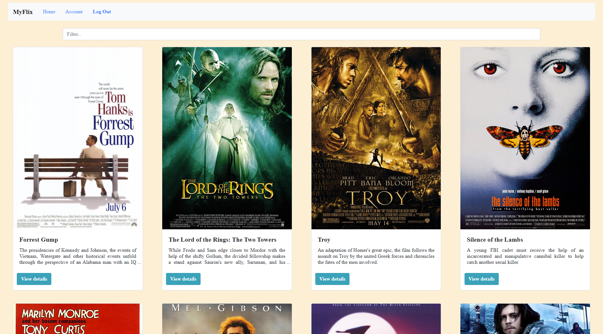
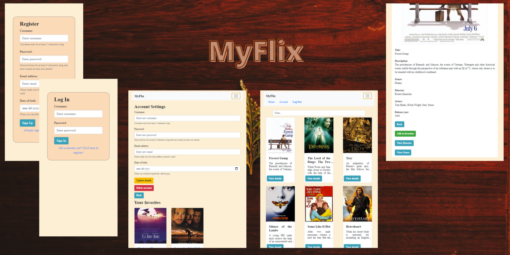

MERN-stack app
Movie app consisting of a database containing a few movies and a client-side providing several features for users. This project was part of the CF Full-Stack Web Development course and was built with the MERN (MongoDB, Express, React, and Node.js) stack.
The web application provides users with access to information about different movies, directors, and genres. Users can sign up, log in, update their account information and manage a list of their favorite movies.
Visit the hosted website, or check out the GitHub repo.
Read the endpoint documentation.
Summary
The server side of the web application consists of a REST API and a database built with JavaScript, Node.js, Express, and MongoDB. The REST API can be accessed via commonly used HTTP methods like GET, PUT, POST and DELETE. CRUD methods are used to retrieve data from the database and store that data in a non-relational way. I used Postman for endpoint testing and Mongoose for the business layer logic. The database was built with MongoDB; the final project is hosted on Heroku.
The client side was built with React. The goal was to develop a single-page, responsive application that uses routing, different interactions and has several interface views:
Test account
To test the app, you can use the following test account:
Please do not delete this account, thank you!
User stories
The project brief contained the following user stories:
Key features
The project brief extracted several mandatory functions from the user stories that needed to be implemented: